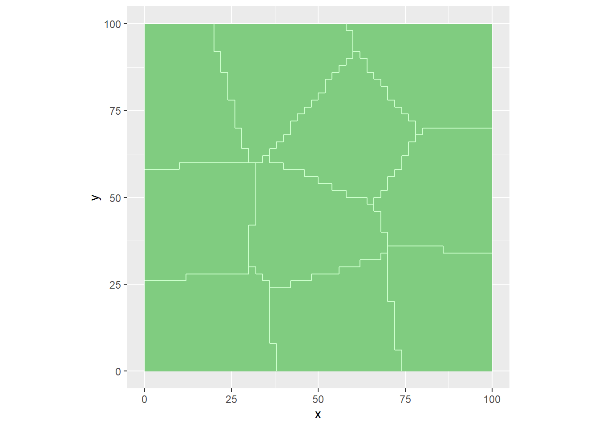
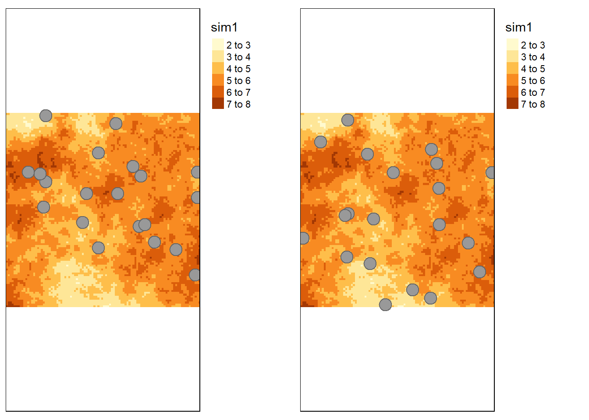

Chapter 5 L’échantillonnage aléatoire stratifié
Pour ce type d’approche, la population ou la zone d’étude est subdivisée en sous-populations, appelées strates.
- Les strates ne peuvent pas se chevaucher, et leur union doit correspondre à la population étudiée.
- Dans chaque strate, un échantillon est sélectionné au hasard
- Les strates peuvent être échantillonnées de nombreuses manières, par exemple par échantillonnage aléatoire (SI). Cela conduit à un échantillonnage aléatoire simple stratifié (STSI)
- La méthode de sélection des unité par SI est appliquée à chaque strate séparément
5.1 Pourquoi stratifier ?
Deux raisons possibles :
- Les estimations des paramètres statistiques pour la zone sont plus précises
- Nous voulons des estimations séparées des paramètres statistiques pour les sous-populations
5.3 Estimateurs STSI
L’estimateur de la moyenne STSI est le suivant
\(\hat{ \overline{z} } = \sum_{h=1}^{H} w_h \hat{\overline{z} }_{h}\)
avec \(w_h = A_h/\sum_{h}A_h\) et \(\hat{\overline{z} }_{h}\) est l’estimateur SI de chaque strate \(h\) avec un échantillonnage aléatoire simple.
La variance d’échantillonnage de la moyenne expérimentale des \(z\) est :
\[\begin{equation} V(\hat{ \overline{z^l} } ) = \sum_{h=1}^{H} w_h^2 \frac{ \hat{ S^2_h} (\hat{ \overline{z^l} } ) }{n_h} \end{equation}\]
où \(\hat{ S^2_h} (\hat{ \overline{z^l} })\) est la variance SI dans la strate \(h\) :
\[\begin{equation} \hat{ S^2_h} (\hat{ \overline{z^l} })= \frac{1}{n_h-1}\sum_{i=1}^{n_h} ( z^l_{hi} -\hat{\overline{z}}_h^l ) \end{equation}\]
5.4 Stratification géographique par strates compactes
Parfois, il n’existe pas d’information a priori sur la variabilité spatiale de la propriété visée. Dans ce cas, une bonne répartition spatiale peut
5.4.1 Définition
Dans cette approche, les \(n\) observations sont réparties de manière optimale au sein de la zone d’étude. Pour cela, on utilise un critère qui minimise la distance entre les observations et un discrétisation de la zone d’étude. La moyenne du carré de la plus courte distance au point j:
\(MCPCD_j = 1/N \sum^N_{i=1}min_j(D_{ij}^2)\)
Le critère \(MCPCD_j\) peut être minmisé en utilisant l’algorithme des K-moyenne
Il existe un package R spcosa de Walvoort, Brus, and Gruijter (2010).
Dans cette appraoche, il n’est pas nécessaire de définir un variogramme a priori pour l’optimisation de la répartition des \(n\) observations. Les strates ainsi définies sont appelées Strates compactes
5.4.2 Estimateurs STSI
Ici, comme les strates ont la même surface et donc le même poids, on peut simplifier les estimateurs
En effet, on peut simplifier les poids : \(w_h = A_h/\sum_{h}A_h = 1/H\)
La moyenne:
\[\begin{equation}
\hat{ \overline{z} } = \sum_{h=1}^{H} \frac1H \hat{\overline{z} }_{h}
\end{equation}\]
et
\[\begin{equation} \hat{\overline{z}}_{h} =\frac1{n_h} \sum_{i=1}^{n_h}z_i \end{equation}\]
Si en plus le nombre d’observations est le même par strate (\(n_h\)), on obtient une formule assez simple
\[\begin{equation} \hat{ \overline{z} } = \frac1N \sum_{i=1}^{N} z_i \end{equation}\]
Pour la variance d’échantillonnage, il en va de même.
\[\begin{equation} V(\hat{ \overline{z^l} } ) = (\frac1H)^2 \sum_{h=1}^{H} \frac{ \hat{ S^2_h} (\hat{ \overline{z^l} } ) }{n_h} \end{equation}\]
5.4.3 Implémentation
Il est conseillé de tirer au hasard 2 points par strate afin de pouvoir calculer une variance. Il suffit ensuite d’adapter le nombre de strate pour atteindre le nombre d’unités d’échantillonnage visé.
Avec cette méthode, il est possible de répartir au mieux les unités dans l’espace.
Ici, on avait retenu 20 unités, soit donc 10 strates.
library(raster)
champSP.r <- raster(champSP)
res(champSP.r)## [1] 1 1#aggregate from 1x1 resolution to 3x3 (factor = 3)
champSP.r.aggregate <- aggregate(champSP.r,
fact = 2)
res(champSP.r.aggregate)## [1] 2 2champSP.r.aggregate <- as(champSP.r.aggregate , "SpatialPixels")
# compute compact geographical strata
myStrata <- stratify(champSP.r.aggregate,
nStrata = 10,
equalArea=TRUE,
nTry=5
)
spcosa::plot(myStrata)
# obtain the surface areas of the strata
print(areaStrata<-getArea(myStrata))## 0 1 2 3 4 5 6 7 8 9
## 1000 1000 1000 1000 1000 1000 1000 1000 1000 1000# select randomly n locations from the strata
mySample <- spsample(myStrata, n = 2)
plot(myStrata, mySample)Comparons les deux approches: SI et STSI avec strates compactes
STSI <- tm_shape(champSP) +
tm_raster()+
tm_shape(mySample@sample)+
tm_symbols()+
tm_layout(legend.outside = TRUE)
tmap_arrange(SI, STSI)
Examinons ce que donne la simulation pour le calcul de la moyenne. On interroge ainsi au droit des pixels les points d’échantillonnage. c’est une opération SIG classique. Puis, on calule la moyenne en utilisant l’estimateur classique.
terrainSTSI <- over(mySample@sample,champSP)
MoyEstSTSI <- mean(terrainSTSI$sim1)
MoyEstSTSI## [1] 5.459981Et pour la variance, il est nécessaire de calculer la variance par state et de calculer ensuite la moyenne de ces variances.
StratesSTSI <- over(mySample@sample,myStrata@cells)
myStrata@stratumId[StratesSTSI]## [1] 0 0 1 1 2 2 3 3 4 4 5 5 6 6 7 7 8 8 9 9Mydata <- cbind.data.frame(
strate = myStrata@stratumId[StratesSTSI],
z= terrainSTSI$sim1
)
Varh<-tapply(Mydata$z, INDEX=Mydata$strate,FUN=var)
VStsi <- (1/10^2) * sum(Varh/2)Voici donc la variance SI \(0.0414588\) et la variance dans ce cas \(0.0271827\)
# calcul de l'interval de confiance selon les deux lois
ICT <- talpha * sqrt(VStsi)
# comme n< 30, on garde ICT
# Est-ce que la vraie moyenne est dans l'IC student
Moy < MoyEstSTSI + ICT## [1] TRUEMoy > MoyEstSTSI - ICT## [1] TRUEcbind(MoyEstSTSI,
ICbas = MoyEstSTSI - ICT,
ICHaut = MoyEstSTSI + ICT, Moy)## MoyEstSTSI ICbas ICHaut Moy
## [1,] 5.459981 5.1149 5.805062 5.298602
5.2 Comment stratifier ?
Deux approches :
Stratification à l’aide d’un variables auxiliaires
Variable catégorielle (unités cartographiques)
variable quantitative (par exemple, images de télédétection)
Stratification par la position géographique uniquement (X et Y)